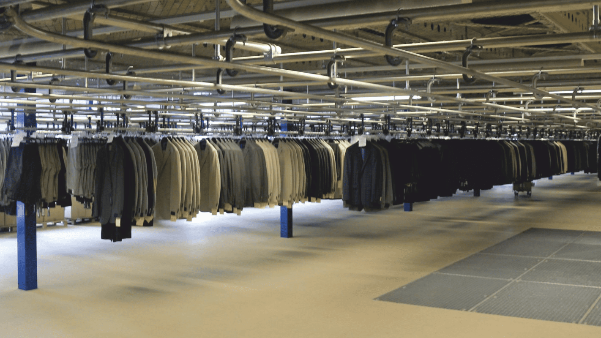
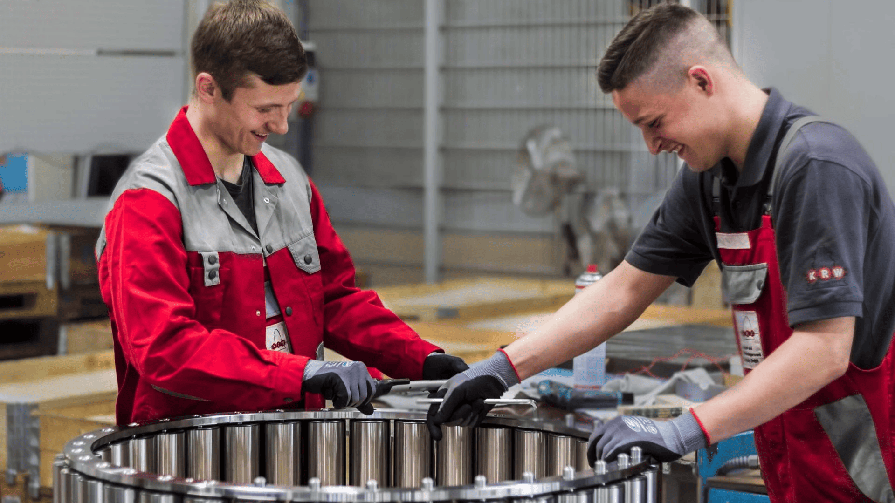
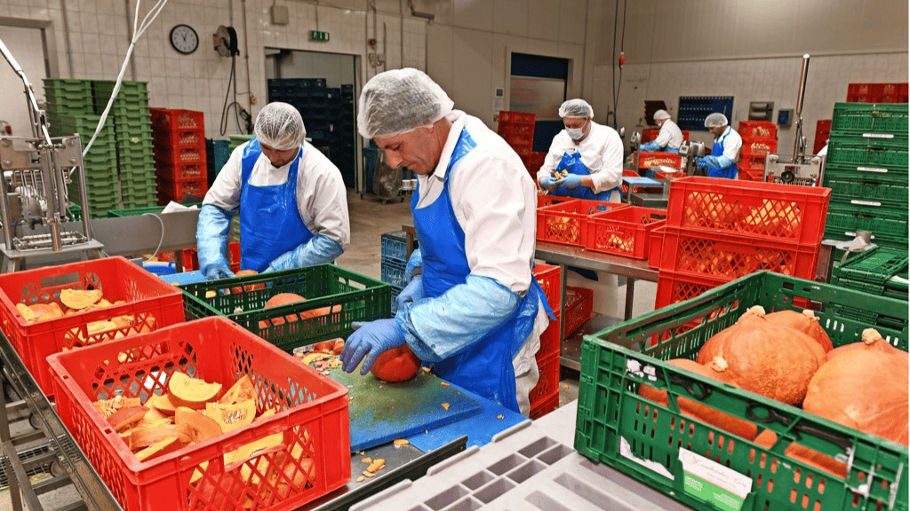
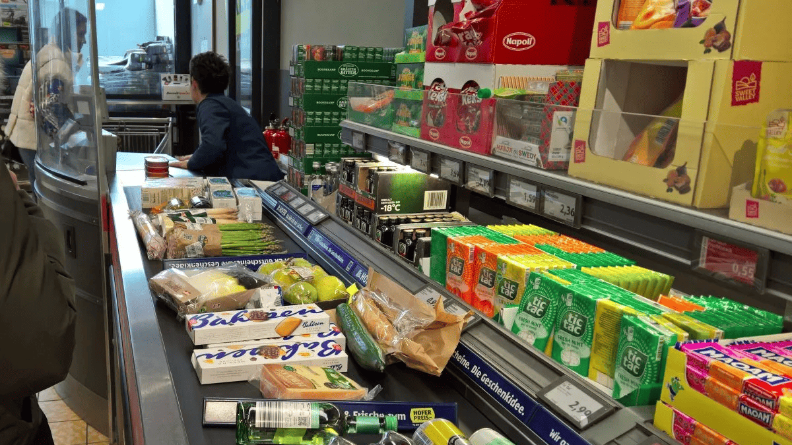

Schulbildung
09/2012 - 07/2018
Sophie-Scholl-Schule, Werkrealschule, Krauchenwies Werkrealschulabschluss, Durchschnitt 2,309/2018 - 07/2019
Ludwig-Erhardt-Schule, Kaufmännisches Berufskolleg, Sigmaringen, BK1Ü, ohne AbschlussWeiterbildung
12/2019 - 09/2020
ABA Ausbildungs- und Berufsförderungsstätte Albstadt e.V., Sigmaringen03/2024 - 06/2025
Berufliches Coaching Erbek.EU Borsdorf Leipzig12/2024 - 08/2025
Projektteilnahme bei Joblinge gAG LeipzigArbeitserfahrung
06/2021 - 08/2021
Textillogistik, Kunzelmann Logistik GmbH, Krauchenwies09/2020-10/2020
Textillogistik, Kunzelmann Logistik GmbH, KrauchenwiesAufgaben:
Textilaufbereitung, Prüfung und Sortierung, Wareneingang und -ausgang, LagerarbeitenPraktika:
Werkstoffprüfer für Systemtechnik
04/2025 - 04/2025
Praktikum als Werkstoffprüfer für Systemtechnik, Kugel- und Rollenlagerwerk Leipzig GmbHAufgaben:
Ultraschallprüfung von Metallringen, Säureprüfung, Härteprüfung, Mikroskopische Metallanalyse, Reinigen von KugellagernPraktika:
Fachkraft für Lebensmitteltechnik
03/2025 - 03/2025
Praktikum als Fachkraft für Lebensmitteltechnik, KÖHRA-Frische GmbHAufgaben:
Verarbeitung von Gemüse, Gemüse schneiden und putzen, Salatschalen herstellen und beklebenPraktika:
Kaufmann im Einzelhandel
06/2016 - 06/2016
Praktikum Kaufmann im Einzelhandel, OBI Markt, Pfullendorf02/2020 - 02/2020
Praktikum Kaufmann im Einzelhandel, EDEKA, Mengen06/2020 - 06/2020
Praktikum Kaufmann im Einzelhandel, ALDI SÜD, PfullendorfKenntnisse & Qualifikationen:
EDV-Kenntnisse:
Grundkenntnisse in Microsoft Word, PowerPointGrundkenntnisse in HTML, CSS und Python (Zertifikat der ADA Azubi Digital Akademie)
Eigenes Python Text Adventure
GitHub LinkSprachkenntnisse:
gute Kenntnisse in Englisch


